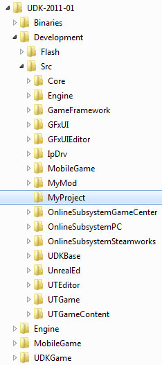
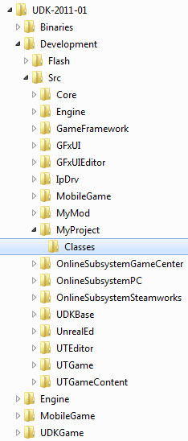
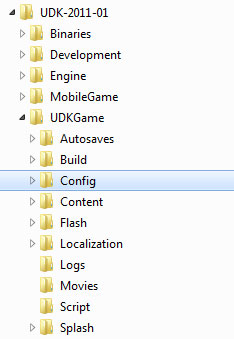
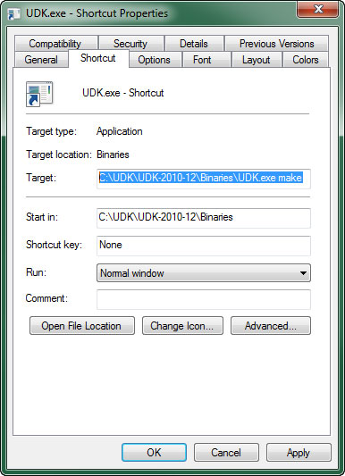
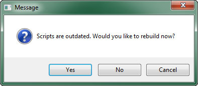
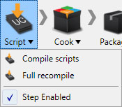

UDN
Search public documentation:
CustomUnrealScriptProjects
日本語訳
中国翻译
한국어
Interested in the Unreal Engine?
Visit the Unreal Technology site.
Looking for jobs and company info?
Check out the Epic games site.
Questions about support via UDN?
Contact the UDN Staff
中国翻译
한국어
Interested in the Unreal Engine?
Visit the Unreal Technology site.
Looking for jobs and company info?
Check out the Epic games site.
Questions about support via UDN?
Contact the UDN Staff
UE3 Home > UnrealScript > Custom UnrealScript Projects
Custom UnrealScript Projects
Overview
In order to add new gameplay elements and other items to an Unreal Engine game, UnrealScripts defining these elements must be created. These scripts must then be added to a project and compiled in order to be used in the game. UnrealScripts are separated into different projects for organization, and these projects are then compiled into packages, one package for each project. As such, the terms projects and packages will be used interchangeably from here on out. The engine has several projects by default. For instance, the Core project contains the base Object class and other base level classes. The Engine project contains the classes that make up the majority of the engine. In general, you will not want to modify any of the classes in the existing projects or add new classes to these. This is not to say it is not possible to do so; however, you must be careful what you modify and generally any new class you add to one of these projects could be added to a new project, which would make more sense. There is no limit to the number of projects that can make up a game. Generally, the projects making up the classes specific to a single game will be contained in one or possibly two main projects (See To Add the Project for more information on why this is a good idea). A standard practice is to create a project with the name of the game or a abbreviation or codename for the game. For instance the Unreal Tournament games use UTGame and the Gears of War games use GearGame.To Create the Project Directory
Since an UnrealScript project is really nothing more than a collection of related scripts, creating a new UnrealScript project means creating a repository for those scripts, or in other words a project directory. All UnrealScript project directories must be located in the../Development/Src folder and must have the same name as the project.
To create an UnrealScript project named MyProject, the project directory structure would be:

Inside the project directory a Classes folder must exist that will hold all of the UnrealScripts belonging to the project. This is where any scripts that should belong to the project should be saved.
The final project directory for the MyProject UnrealScript project above would be:

Once the project folder and the Classes folder exist, the project is technically created and new scripts can be created or added within the Classes folder.
To Add the Project
Even with the project directory created, the engine still needs to be made aware of the project in order for it to be compiled when it comes time to build the project for use in the game. The engine uses a list of projects, theEditPackages array, to determine which projects are included and should be compiled. To add a project to the engine, the DefaultEngine.ini must be edited to include the new project in the EditPackages array. The DefaultEngine.ini file can be found in the Config folder of your game's directory. For example, the config files for UDK are found in the following directory:

Note: The projects are added to the DefaultEngine.ini and not the [*]Engine.ini (where [*] is the name of your game, i.e. UDKEngine.ini) because the .ini files for your game can be overwritten by the engine. The Default*.ini files are never overwritten by the engine. They will only by modified manually, meaning your changes will be "permanent" and never lost accidentally.
The EditPackages array entries must be added in the [UnrealEd.EditorEngine] section of the .ini file. For example, the UTGame and UTGameContent example projects are added to the game using the following entries in the DefaultEngine.ini:
[UnrealEd.EditorEngine] +EditPackages=UTGame +EditPackages=UTGameContentThe order the projects are added is of extreme importance as it determines the order in which the projects are compiled. Why is this so important, though? Classes can only reference other classes or types if they are in the same project or another project that has already been compiled. Using the example of
UTGame and UTGameContent above, this means that if a class in the UTGame project had a reference to a class from the UTGameContent package, the compiler would not know of that class's existence and would throw an error. This is also the reason why related classes and classes that make reference to one another are generally contained in the same project. It really becomes apparent when a sort of cyclic relationship occurs where one class from one project references a class from another project, and a completely separate class from the second project references yet another class from the first project. One of the references will work, but the other will fail; and no matter how the projects are reordered, one of them will always fail. Simply placing all of the classes in the same project will eliminate this issue completely.
To Compile the Project
Once the engine is aware of the project and the project contains at least one script, the scripts can be compiled to create the package for the project. There are several ways that scripts can be compiled:- Make Commandlet
- Auto-compiling by running the game or editor
- UnrealFrontend
Make Commandlet
The Make commandlet is a program contained within the game's executable, called a commandlet, that compiles the scripts and builds the packages. It can be run by passingmake to the main game executable, much in the same way that Unreal Editor is run by passing editor to the executable. This can be done by either:
-
Running the executable from the command line and passing the
makeswitchC:\UDK\[Version]\Binaries> UDK.exe make -
Creating a shortcut to the executable and adding the
makeswitch to thetarget
Auto-compiling
Whenever the game or editor is started, all projects in theEditPackages list are checked to see if new scripts exist. This means any script in the Classes folder is new or has been updated. This is based on the modified time of the file as compared to the time the package for that project was created. If a new script exists, a prompt will appear asking if the scripts should be rebuilt or not.

| Option | Description |
|---|---|
| Yes | Causes the scripts to be compiled using the Make commandlet described previously. |
| No | Runs the game or editor ignoring any new scripts using the existing packages. |
| Cancel | Aborts the operation entirely without compiling the scripts or running the game or editor. |
UnrealFrontend
The UnrealFrontend application provides the ability to build scripts, either as a single operation or as part of a pipeline for building and packaging the game for testing or distribution. To build scripts through UnrealFrontend, simply click the Script button to show the script compiling menu.  Choose one of the options:| Option | Description |
|---|---|
| Compile Scripts | Compiles the scripts for any projects which have new or updated scripts present. |
| Full Recompile | Forces all projects in the EditPackages list to be compiled, regardless of whether any changes have been made. |